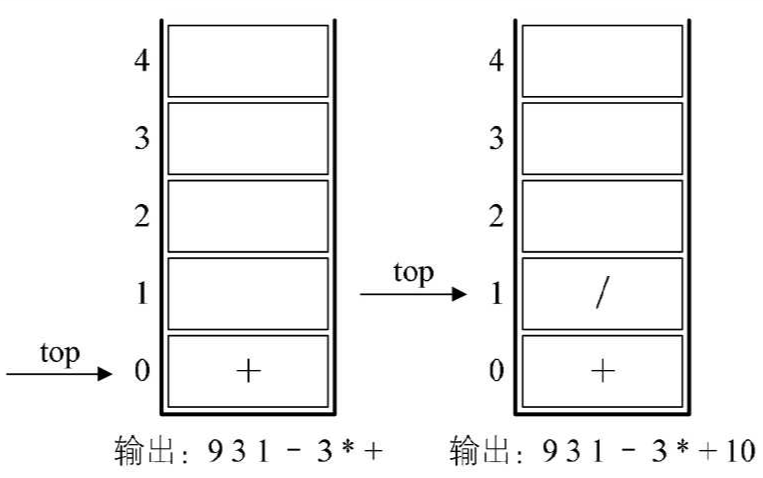
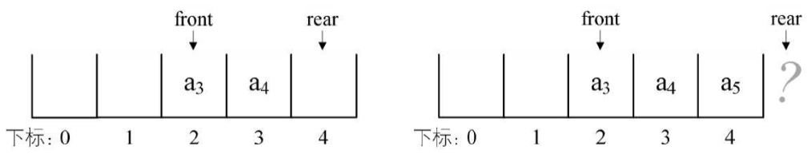

栈是限定仅在表尾进行插入和删除操作的线性表。
队列是只允许在一端进行插入操作、而在另一端进行删除操作的线性表。
栈（stack）是限定仅在表尾进行插入和删除操作的线性表。
我们把允许插入和删除的一端称为栈顶（top），另一端称为栈底（bottom），不含任何数据元素的栈称为空栈。栈又被称为后进先出（LastIn First Out）的线性表，简称LIFO结构。
理解栈的定义需要注意：
首先它是一个线性表，也就是说，栈元素具有线性关系，即前驱后继关系。只不过它是一种特殊的线性表而已。定义中说是在线性表的表尾进行插入和删除操作，这里表尾是指栈顶，而不是栈底。
它的特殊之处就在于限制了这个线性表的插入和删除位置，它始终只在栈顶进行。这也就使得：栈底是固定的，最先进栈的只能在栈底。
栈的插入操作，叫作进栈，也称压栈、入栈。如下图：
栈的删除操作，叫作出栈，也有的叫作弹栈。如下图：
现在我要问问大家，这个最先进栈的元素，是不是就只能是最后出栈呢？
答案是不一定，要看什么情况。栈对线性表的插入和删除的位置进行了限制，并没有对元素进出的时间进行限制，也就是说，在不是所有元素都进栈的情况下，事先进去的元素也可以出栈，只要保证是栈顶元素出栈就可以。
举例来说，如果我们现在是有 3 个整型数字元素 1、2、3 依次进栈，会有哪些出栈次序呢？
第一种：1、2、3 进，再 3、2、1 出。这是最简单的最好理解的一种，出栈次序为 321。
第二种：1 进，1 出，2 进，2 出，3 进，3 出。也就是进一个就出一个，出栈次序为 123。
第三种：1 进，2 进，2 出，1 出，3 进，3 出。出栈次序为 213。
第四种：1 进，1 出，2 进，3 进，3 出，2 出。出栈次序为 132。
第五种：1 进，2 进，2 出，3 进，3 出，1 出。出栈次序为 231。
有没有可能是 312 这样的次序出栈呢？答案是肯定不会。因为 3 先出栈，就意味着，3曾经进栈，既然 3 都进栈了，那也就意味着 1 和 2 已经进栈了，此时，2 一定是在 1 的上面，就是更接近栈顶，那么出栈只可能是 321，不然不满足 123 依次进栈的要求，所以此时不会发生 1 比 2 先出栈的情况。
从这个简单的例子就能看出，只是 3 个元素，就有 5 种可能的出栈次序，如果元素数量多，其实出栈的变化将会更多的。这个知识点一定要弄明白。
对于栈来讲，理论上线性表的操作特性它都具备，可由于它的特殊性，所以针对它在操作上会有些变化。特别是插入和删除操作，我们改名为 push 和 pop，英文直译的话是压和弹，更容易理解。
ADT 栈（stack）
Data
同线性表。元素具有相同的类型，相邻元素具有前驱和后继关系。
Operation
Initstack(*S);初始化操作，建立一个空栈S。
DestroyStack(*S);若栈存在，则销毁它。
ClearStack(*S);将栈清空。
StackEmpty(S);若栈为空，返回true;否则返回false。
GetTop(S,*e);若栈存在且非空，用e返回S的栈顶元素。
Push(*S,e);若栈S存在，插入新元素e到栈S中并成为栈顶元素。又称：进栈，压栈，入栈。
Pop(*S,*e);删除栈S中栈顶元素，并用e返回其值。又称：出栈，弹栈。
StackLength(S);返回栈S的元素个数。
endADT
既然栈是线性表的特例，那么栈的顺序存储其实也是线性表顺序存储的简化，我们简称为顺序栈。
线性表是用数组来实现的。下标为 0 的一端作为栈底，因为首元素都存在栈底，变化最小，若存储栈的长度为 StackSize，则栈顶位置 top 必须小于 StackSize。当栈存在一个元素时，top 等于 0，通常把空栈的判定条件定为 top 等于 −1。
栈的结构定义如下：
typedef int SElemType; /* SElemType类型根据实际情况而定，这里假设为int */ typedef struct { SElemType data[MAXSIZE]; int top; /* 用于栈顶指针 */ }SqStack;
栈普通情况、空栈和栈满的情况示意图(StackSize 是 5)：
栈的插入，即进栈操作：
对应的代码如下：
/* 插入元素e为新的栈顶元素 */ Status Push(SqStack *S,SElemType e) { if(S->top == MAXSIZE -1) /* 栈满 */ { return ERROR; } S->top++; /* 栈顶指针增加一 */ S->data[S->top]=e; /* 将新插入元素赋值给栈顶空间 */ return OK; }
出栈操作 pop：
/* 若栈不空，则删除S的栈顶元素，用e返回其值， 并返回OK；否则返回ERROR */ Status Pop(SqStack *S, SElemType *e) { if (S->top == -1) return ERROR; *e = S->data[S->top]; /* 将要删除的栈顶元素赋值给e */ S->top--; /* 栈顶指针减一 */ return OK; }
两者都没有涉及到任何循环语句，两者时间复杂度均是 。
其实栈的顺序存储还是很方便的，因为它只准栈顶进出元素，所以不存在钱性表插入和删除时需要移动元素的问题。不过它有一个很大的缺陷，就是必须事先确定数组存储空间大小，万一不够用了，就需要编程手段来扩展数组的容量，非常麻烦。对于一个栈，我们也只能尽量考虑周全，设计出合适大小的数组来处理，但对于两个相同类型的栈，我们却可以做到最大限度地利用其事先开辟的存储空间束进行操作。
我们的做法如下图。用一个数组来存储两个栈，数组有两个端点，两个栈有两个栈底，让一个栈的栈底为数组的始端，即下标为 处，另一个栈为数组的末端，即下标为 数组长度处。两个栈如果增加元素，就是两端点向中间延伸。
其实关键思路是：它们是在数组的两端，向中间靠拢。top1 和 top2 是栈 1 和 栈 2 的栈顶指针，可以想象，只要它们俩不见面，两个栈就可以一直使用。
从这里也就可以分析出来，栈 1 为空时，就是 top1 等于 -1 时；而当 top2 等于 n 时，即是栈 2 为空时，那什么时候栈满呢？
想想极端的情况，若栈 2 是空栈，栈 1 的 top1 等于 n—1 时，就是栈 1 满了。反之, 当栈 1 为空栈时，top2 等于 0 时，为栈 2 满。但更多的情况，其实就是我刚才说的，两个栈见面之时，也就是两个指针之间相差 1 时，即 top1+1==top2 为栈满。
两栈共享空间的结构的代码如下：
/* 两栈共享空间结构 */ typedef struct { SElemType data[MAXSIZE]; int top1; /* 栈1栈顶指针 */ int top2; /* 栈2栈顶指针 */ } SqDoubleStack;
对于两栈共享空间的 push 方法，除了要插入元素值参数外，还需要有一个判断是栈 1 还是栈 2 的栈号参数 stackNumber。插入元素的代码如下：
/* 插入元素e为新的栈顶元素 */ Status Push(SqDoubleStack *S, SElemType e, int stackNumber) { /* 栈已满，不能再push新元素了 */ if (S->top1 + 1 == S->top2) return ERROR; /* 栈1有元素进栈 */ if (stackNumber == 1) /* 若栈1则先top1+1后给数组元素赋值 */ S->data[++S->top1] = e; /* 栈2有元素进栈 */ else if (stackNumber == 2) /* 若栈2则先top2-1后给数组元素赋值 */ S->data[--S->top2] = e; return OK; }
因为在开始已经判断了是否有栈满的情况，所以后面的 top1+1 或 top2-1 是不担心溢出问题的。
对于两栈共享空间的 pop 方法，参数就只是判断栈 1 栈 2 的参数 stackNumber。代码如下：
/* 若栈不空，则删除S的栈顶元素，用e返回其值，并返回OK；否则返回ERROR */ Status Pop(SqDoubleStack *S,SElemType *e,int stackNumber) { if (stackNumber==1) { if (S->top1==-1) return ERROR; /* 说明栈1已经是空栈，溢出 */ *e=S->data[S->top1--]; /* 将栈1的栈顶元素出栈 */ } else if (stackNumber==2) { if (S->top2==MAXSIZE) return ERROR; /* 说明栈2已经是空栈，溢出 */ *e=S->data[S->top2++]; /* 将栈2的栈顶元素出栈 */ } return OK; }
事实上，使用这样的数据结构，通常都是当两个栈的空间需求有相反关系时，也就是一个栈增长时另一个栈在缩短的情况。否则，两个栈都在不停地增长，那很快就会因栈满而溢出了。
当然，这只是针对两个具有相同数据类型的栈的一个设计上的技巧，如果是不相同数据类型的栈，这种办法不但不能更好地处理问题，反而会使得问题变得更复杂，要注意这个前提。
栈的链式存储结构，简称为链栈。
由于单链表有头指针，而栈顶指针也是必须的，所以比较好的办法是把栈顶放在单链表的头部。另外，都已经有了栈顶在头部了，单链表中比较常用的头结点也就失去了意义，通常对于链栈来说，是不需要头结点的。
对于链栈来说，基本不存在栈满的情况，除非内存已经没有可以使用的空间，如果真的发生，那此时的计算机操作系统已经面临死机崩溃的情况，而不是这个链栈是否溢出的问题。
但对于空栈来说，链表原定义是头指针指向空，那么链栈的空其实就是 top=NULL 的时候。
链栈的结构代码如下：
/* 链栈结构 */ typedef struct StackNode { SElemType data; struct StackNode *next; }StackNode,*LinkStackPtr; typedef struct LinkStack { LinkStackPtr top; int count; }LinkStack;
链栈的操作绝大部分都和单链表类似，只是在插入和删除上特殊一些。
对于链栈的进栈 push 操作，假设元素值为 e 的新结点是 s，top 为栈顶指针。示意图如下：
/* 插入元素e为新的栈顶元素 */ Status Push(LinkStack *S,SElemType e) { LinkStackPtr s=(LinkStackPtr)malloc(sizeof(StackNode)); s->data=e; s->next=S->top; /* 把当前的栈顶元素赋值给新结点的直接后继，见图中1 */ S->top=s; /* 将新的结点s赋值给栈顶指针，见图中2 */ S->count++; return OK; }
假设变量 用来存储要删除的栈顶结点，将栈顶指针下移一位，最后释放 即可。如下图所示：
/* 若栈不空，则删除S的栈顶元素，用e返回其值，并返回OK；否则返回ERROR */ Status Pop(LinkStack *S,SElemType *e) { LinkStackPtr p; if(StackEmpty(*S)) return ERROR; *e=S->top->data; p=S->top; /* 将栈顶结点赋值给p，见图中③ */ S->top=S->top->next; /* 使得栈顶指针下移一位，指向后一结点，见图中④ */ free(p); /* 释放结点p */ S->count--; return OK; }
链栈的进栈 push 和出栈 pop 没有任何循环操作，时间复杂度均为 。
顺序栈与链栈：
栈的引入简化了程序设计的问题，划分了不同关注层次，使得思考范围缩小，更加聚焦于要解决的问题核心。反之，像数组等，因为要分散精力去考虑数组的下标增减等细节问题，反而掩盖了问题的本质。
编号 ① 的一对兔子经过六个月就变成 8 对兔子。
数学函数来定义就是：
打印出前40位的斐波那契数列数。代码如下：
#include "stdio.h" int Fbi(int i) /* 斐波那契的递归函数 */ { if( i < 2 ) return i == 0 ? 0 : 1; return Fbi(i - 1) + Fbi(i - 2); /* 这里Fbi就是函数自己，等于在调用自己 */ } int main() { int i; int a[40]; printf("迭代显示斐波那契数列：\n"); a[0]=0; a[1]=1; printf("%d ",a[0]); printf("%d ",a[1]); for(i = 2;i < 40;i++) { a[i] = a[i-1] + a[i-2]; printf("%d ",a[i]); } printf("\n"); printf("递归显示斐波那契数列：\n"); for(i = 0;i < 40;i++) printf("%d ", Fbi(i)); return 0; }
Fbi(i) 函数当 i=5 的执行过程：
在高级语言中，调用自己和其他函数并没有本质的不同。把一个直接调用自己或通过一系列的调用语句间接地调用自己的函数，称做递归函数。
写递归程序最怕的就是陷入永不结束的无穷递归中，所以，每个递归定义必须至少有一个条件，满足时递归不再进行，即不再引用自身而是返回值退出。
迭代和递归的区别：
| 迭代 | 递归 |
|---|---|
| 循环结构 | 选择结构 |
| 不需要反复调用函数和占用额外的内存 | 使程序的结构更清晰、更简洁、更容易让人理解，从而减少读懂代码的时间。但是大量的递归调用会建立函数的副本，会耗费大量的时间和内存 |
我们应该视不同情况选择不同的代码实现方式。
使用栈实现递归：
在前行阶段，对于每一层递归，函数的局部变量、参数值以及返回地址都被压入栈中。在退回阶段，位于栈顶的局部变量、参数值和返回地址被弹出，用于返回调用层次中执行代码的其余部分，也就是恢复了调用的状态。
当然，对于现在的高级语言，这样的递归问题是不需要用户来管理这个栈的，一切都由系统代劳了。
9+(3-1)×3+10÷2 用后缀表示法表示：9 3 1-3*+102/+，叫后缀的原因在于所有的符号都是在要运算数字的后面出现。
后缀表达式：9 3 1-3*+10 2/+。
规则：从左到右遍历表达式的每个数字和符号，遇到是数字就进栈，遇到是符号，就将处于栈顶两个数字出栈，进行运算，运算结果进栈，一直到最终获得结果。
接下来是 “-”，所以将栈中的 1 出栈作为减数，3 出栈作为被减数，并运算 3-1 得到 2，再将 2 进栈，如下左图；
接着是数字 3 进栈，如下右图；
后面是 “*”，也就意味着栈中 3 和 2 出栈，2 与 3 相乘，得到 6，并将 6 进栈，如下左图；
下面是 “+”，所以栈中 6 和 9 出栈，9 与 6 相加，得到 15，将 1 5进栈，如图右图；
接着是 10 与 2 两数字进栈，如下左图所示；
接下来是符号 “/”，因此，栈顶的 2 与 10 出栈，10 与 2 相除，得到 5，将 5 进栈，如下右图；
最后一个是符号 “+”，所以 15 与 5 出栈并相加，得到 20，将 20 进栈，如图左图；
结果是 20 出栈，栈变为空，如下右图。
果然，后缀表达法可以顺利解决计算问题。接下来需要弄清楚如何将“普通的表达式”（中缀表达式）转换为后缀表达式。
平时所用的标准四则运算表达式，即 9+(3-1)×3+10÷2 叫做中缀表达式。
规则：从左到右遍历中缀表达式的每个数字和符号，若是数字就输出，即成为后缀表达式的一部分；若是符号，则判断其与栈顶符号的优先级，是右括号或优先级不高于栈顶符号（乘除优先加减）则栈顶元素依次出栈并输出，并将当前符号进栈，一直到最终输出后缀表达式为止。
9，后面是符号 “+”，进栈。如右图；第三个字符是“(”，依然是符号，因其只是左括号，还未配对，故进栈。如左图；
第四个字符是数字 3，输出，总表达式为 9 3，接着是 “-”，进栈。如右图；
接下来是数字 1，输出，总表达式为 9 3 1，后面是符号“)”，此时，需要去匹配此前的“(”，所以栈顶依次出栈，并输出，直到“(”出栈为止。此时左括号上方只有“-”，因此输出“-”。总的输出表达式为 9 3 1 -。如左图；
紧接着是符号 “×”，因为此时的栈顶符号为 “+” 号，优先级低于 “×”，因此不输出，“*” 进栈。接着是数字 3，输出，总的表达式为 9 3 1 - 3。如右图；
之后是符号 “+”，此时当前栈顶元素 “*” 比这个 “+” 的优先级高，因此栈中元素出栈并输出（没有比 “+” 号更低的优先级，所以全部出栈），总输出表达式为 9 3 1 - 3 * +。然后将当前这个符号 “+” 进栈。前 6 张图的栈底的 “+” 是指中缀表达式中开头的 9 后面那个 “+”，而下图中的栈底（也是栈顶）的 “+” 是指 9+(3-1)×3+ 中的最后一个 “+”。
紧接着数字 10，输出，总表达式变为 9 3 1 - 3 * + 10。后是符号 “÷”，所以 “/” 进栈。如右图；

最后一个数字 2，输出，总的表达式为 9 31- 3 * + 10 2。如左图；
因已经到最后，所以将栈中符号全部出栈并输出。最终输出的后缀表达式结果为 9 3 1 - 3 * +10 2 / +。如右图。
从刚才的推导中会发现，要想让计算机具有处理我们通常的标准（中缀）表达式的能力，最重要的就是两步：
队列（queue）是只允许在一端进行插入操作，而在另一端进行删除操作的线性表。
队列是一种先进先出（First In First Out）的线性表，简称 FIFO。允许插入的一端称为队尾，允许删除的一端称为队头。 假设队列是 ，那么 就是队头元素，而 是队尾元素。删除时，总是从 开始，而插入时，列在最后。
同样是线性表，队列也有类似线性表的各种操作，不同的就是插入数据只能在队尾进行，删除数据只能在对头进行。
ADT 队列(Queue) Data 同线性表。元素具有相同的类型，相邻元素具有前驱和后继关系。 Operation InitQueue(*Q): 初始化操作，建立一个空队列Q。 DestroyQueue(*Q): 若队列Q存在，则销毁它。 ClearQueue(*Q): 将队列Q清空。 QueueEmpty(Q): 若队列Q为空，返回true，否则返回false。 GetHead(Q, *e): 若队列Q存在且非空，用e返回队列Q的队头元素。 EnQueue(*Q, e): 若队列Q存在，插入新元素e到队列Q中并成为队尾元素。 DeQueue(*Q, *e): 删除队列Q中队头元素，并用e返回其值。 QueueLength(Q): 返回队列Q的元素个数 endADT
线性表有顺序存储和链式存储，栈是线性表，所以有这两种存储方式。同样，队列作为一种特殊的线性表，也同样存在这两种存储方式。
假设一个队列有 个元素，则顺序存储的队列需建立一个大于 的数组，并把队列的所有元素存储在数组的前 个单元，数组下标为 0 的一端即是队头。入队列操作就是在队尾追加一个元素，不需要移动任何元素，时间复杂度为 。
队列元素的出列是在队头，即下标为 0 的位置，队列中的所有元素都得向前移动，以保证队列的队头，也就是下标为 0 的位置不为空，此时时间复杂度为 。
为了避免当只有一个元素时，队头和队尾重合使处理变得麻烦，引入两个指针，front 指针指向队头元素，rear 指针指向队尾元素的下一个位置，当 front 等于 rear 时，此队列不是还剩一个元素，而是空队列。
假设是长度为 5 的数组，初始状态，空队列如左图，front 与 rear 指针均指向下标为 0 的位置。然后入队 ，front 指针依然指向下标为 0 位置，而 rear 指针指向下标为 4 的位置。
出队 ，front 指针指向下标为 2 的位置，rear 不变，如左图，再入队 ，front 指针不变，rear 指针移动到数组之外。

如果接着入队的话，因数组末尾元素已经占用，再向后加，就会产生数组越界的错误，可实际上，下标为 0 和 1 的地方还是空闲的,这种现象叫做假溢出。
队列的这种头尾相接的顺序存储结构称为循环队列。（为了解决假溢出）
rear 可以改为指向下标为的位置：
接着入队 ，将它放置于下标为 0 处，rear 指针指向下标为 1 处，如左图。再入队 ，则 rear 指针就与 front 指针重合，同时指向下标为 2 的位置，如右图。
如何判断此时的队列究竟是空还是满呢？
front=rear，且 flag=0 时为队列空，当 front=rear，且 flag=1 时为队列满。front=rear，当队列满时，保留一个元素空间，如下图。也就是说，队列满时，数组中还有一个空闲单元，就认为此队列已经满了，即不允许上图右图情况出现。重点讨论第二种方法，由于 rear 可能比 front 大，也可能比 front 小，若队列的最大尺寸为 QueueSize，队列满的条件是：
（取模 “%” 的目的就是为了整合 rear 与 front 大小为一个问题）。
循环队列的顺序存储结构代码如下：
/* 循环队列的顺序存储结构 */ typedef struct { QElemType data[MAXSIZE]; int front; /* 头指针 */ int rear; /* 尾指针，若队列不空，指向队列尾元素的下一个位置 */ }SqQueue;
循环队列的初始化代码如下：
/* 初始化一个空队列Q */ Status InitQueue(SqQueue *Q) { Q->front=0; Q->rear=0; return OK; }
循环队列求队列长度代码如下：
/* 返回Q的元素个数，也就是队列的当前长度 */ int QueueLength(SqQueue Q) { return (Q.rear-Q.front+MAXSIZE)%MAXSIZE; }
循环队列的入队列操作代码如下：
/* 若队列未满，则插入元素e为Q新的队尾元素 */ Status EnQueue(SqQueue *Q,QElemType e) { if ((Q->rear+1)%MAXSIZE == Q->front) /* 队列满的判断 */ return ERROR; Q->data[Q->rear]=e; /* 将元素e赋值给队尾 */ Q->rear=(Q->rear+1)%MAXSIZE;/* rear指针向后移一位置， */ /* 若到最后则转到数组头部 */ return OK; }
循环队列的出队列操作代码如下：
/* 若队列不空，则删除Q中队头元素，用e返回其值 */ Status DeQueue(SqQueue *Q,QElemType *e) { if (Q->front == Q->rear) /* 队列空的判断 */ return ERROR; *e=Q->data[Q->front]; /* 将队头元素赋值给e */ Q->front=(Q->front+1)%MAXSIZE; /* front指针向后移一位置， */ /* 若到最后则转到数组头部 */ return OK; }
从上述的内容可以发现，单是顺序存储，若不是循环队列，算法的时间性能是不高的，但循环队列又面临着数组可能会溢出的问题，所以还需要研究下不需要担心队列长度的链式存储结构。
队列的链式存储结构就是线性表的单链表，只不过它只能尾进头出，简称为链队列。
将队头指针指向链队列的头结点，队尾指针指向终端结点：
空队列时，front 和 rear 都指向头结点：
链队列的结构为：
/* QElemType类型根据实际情况而定，这里假设为int */ typedef int QElemType; typedef struct QNode /* 结点结构 */ { QElemType data; struct QNode *next; } QNode,*QueuePtr; typedef struct /* 队列的链表结构 */ { QueuePtr front,rear; /* 队头、队尾指针 */ } LinkQueue;
入队操作时就是在链表尾部插入结点：
代码如下：
/* 插入元素e为Q的新的队尾元素 */ Status EnQueue(LinkQueue *Q,QElemType e) { QueuePtr s=(QueuePtr)malloc(sizeof(QNode)); if(!s) /* 存储分配失败 */ exit(OVERFLOW); s->data=e; s->next=NULL; Q->rear->next=s; /* 把拥有元素e的新结点s赋值给原队尾结点的后继，见图中1 */ Q->rear=s; /* 把当前的s设置为队尾结点，rear指向s，见图中2 */ return OK; }
出队操作时，就是头结点的后继结点出队，将头结点的后继改为它后面的结点，若链表除头结点外只剩一个元素时，则需将 rear 指向头结点。
代码如下：
/* 若队列不空,删除Q的队头元素,用e返回其值,并返回OK,否则返回ERROR */ Status DeQueue(LinkQueue *Q,QElemType *e) { QueuePtr p; if(Q->front==Q->rear) return ERROR; p=Q->front->next; /* 将欲删除的队头结点暂存给p，见图中1 */ *e=p->data; /* 将欲删除的队头结点的值赋值给e */ Q->front->next=p->next;/* 将原队头结点的后继p->next赋值给头结点后继，见图中2 */ if(Q->rear==p) /* 若队头就是队尾，则删除后将rear指向头结点，见图中3 */ Q->rear=Q->front; free(p); return OK; }
循环队列与链队列：
栈（stack）是限定仅在表尾进行插入和删除操作的线性表。
队列（queue）是只允许在一端进行插入操作，而在另一端进行删除操作的线性表。
它们均可以用线性表的顺序存储结构来实现，但都存在着顺序存储的一些弊端。